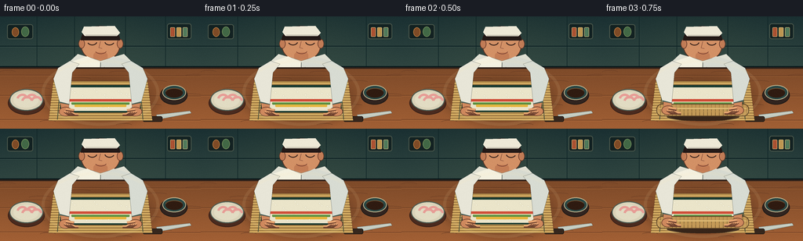
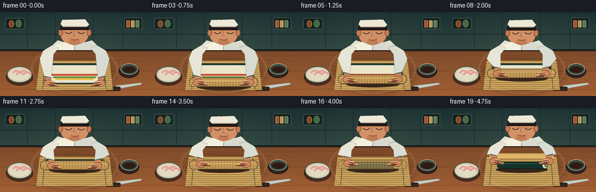

CODING AGENTS AS PIXEL WORLD MODELS
traex/GPT-5.6-Sol · motion_rationality_0023
点击播放 · 原生 RGB 像素
逐轮保存的候选
回放视频、检查图与代码变化。
每份候选均可单独播放。实际图片检查记录在下方工具轨迹中。
候选 01播放与检查图
点击播放 · 原生 RGB 像素


展开代码变化
--- 上一保存版本
+++ 本次保存版本
@@ -0,0 +1,218 @@
+from pathlib import Path
+import math
+import numpy as np
+from PIL import Image, ImageDraw, ImageFilter
+import artifact_io
+
+W, H, N = 256, 144, 20
+S = 4
+rng = np.random.default_rng(23)
+
+def sc(v):
+ return int(round(v*S))
+def box(b):
+ return tuple(sc(v) for v in b)
+def pts(p):
+ return [(sc(x),sc(y)) for x,y in p]
+
+def smooth(x):
+ x=max(0,min(1,x)); return x*x*(3-2*x)
+
+def render(i):
+ t=i/(N-1)
+ # fixed, softly graded deep-teal tiled kitchen wall
+ yy=np.arange(H*S)[:,None]
+ xx=np.arange(W*S)[None,:]
+ arr=np.zeros((H*S,W*S,3),dtype=np.float32)
+ top=np.array([25,47,50.]); bottom=np.array([50,72,67.])
+ g=np.clip(yy/(78*S),0,1)[...,None]
+ arr[:]=top*(1-g)+bottom*g
+ glow=np.exp(-(((xx-130*S)/(105*S))**2+((yy-30*S)/(58*S))**2))[...,None]
+ arr += glow*np.array([9,8,3])
+ im=Image.fromarray(np.uint8(np.clip(arr,0,255)), 'RGB')
+ d=ImageDraw.Draw(im)
+ # backsplash grout and shelves
+ d.line(pts([(0,38),(256,38)]), fill=(12,32,35), width=sc(1))
+ d.line(pts([(0,39),(256,39)]), fill=(57,79,75), width=sc(.45))
+ for x in (47,95,160,211):
+ d.line(pts([(x,0),(x,66)]), fill=(16,37,39), width=sc(.65))
+ d.line(pts([(0,65),(256,65)]), fill=(10,25,28), width=sc(3))
+ # shelf and subtle jars, behind chef
+ d.rounded_rectangle(box((9,10,42,29)), radius=sc(3), fill=(19,34,34), outline=(75,88,76), width=sc(1))
+ d.ellipse(box((15,14,24,26)), fill=(126,75,39), outline=(190,126,65), width=sc(.7))
+ d.ellipse(box((27,13,37,26)), fill=(66,104,70), outline=(116,143,91), width=sc(.7))
+ d.rounded_rectangle(box((213,9,244,29)), radius=sc(3), fill=(19,34,34), outline=(75,88,76), width=sc(1))
+ for k,c in enumerate(((170,82,50),(190,151,82),(80,121,91))):
+ x=217+k*8
+ d.rounded_rectangle(box((x,14,x+6,26)),radius=sc(1),fill=c,outline=(221,194,130),width=sc(.5))
+ # chef head/neck, small natural bob during pressure
+ bob=0.7*math.sin(t*math.pi) + (0.7 if .58<t<.82 else 0)
+ # ears and neck
+ d.ellipse(box((103,16+bob,153,58+bob)), fill=(211,145,102), outline=(91,53,39), width=sc(1.1))
+ d.ellipse(box((100,29+bob,108,41+bob)), fill=(193,124,86), outline=(96,54,40), width=sc(.7))
+ d.ellipse(box((149,29+bob,157,41+bob)), fill=(193,124,86), outline=(96,54,40), width=sc(.7))
+ d.rounded_rectangle(box((119,46+bob,137,59)),radius=sc(4),fill=(195,125,86))
+ # hair and white headband
+ d.pieslice(box((103,12+bob,153,49+bob)),180,360,fill=(35,25,23))
+ d.polygon(pts([(104,20+bob),(107,13+bob),(146,12+bob),(153,21+bob),(149,25+bob),(108,25+bob)]),fill=(238,233,215))
+ d.line(pts([(109,24+bob),(149,24+bob)]),fill=(172,166,151),width=sc(.8))
+ # face looking down
+ d.arc(box((111,27+bob,124,37+bob)), 15,155, fill=(63,40,32), width=sc(1.2))
+ d.arc(box((133,27+bob,146,37+bob)), 25,165, fill=(63,40,32), width=sc(1.2))
+ d.line(pts([(128,32+bob),(126,40+bob),(130,41+bob)]),fill=(135,81,61),width=sc(.8))
+ d.arc(box((121,39+bob,136,48+bob)),20,155,fill=(112,58,45),width=sc(.8))
+ # torso behind counter
+ d.polygon(pts([(99,48),(116,53),(128,57),(141,53),(158,48),(175,65),(181,91),(75,91),(81,65)]),fill=(224,224,211),outline=(78,89,83))
+ d.polygon(pts([(111,51),(128,59),(120,90),(91,90),(91,58)]),fill=(244,241,224))
+ d.polygon(pts([(145,51),(128,59),(136,90),(165,90),(165,57)]),fill=(215,218,208))
+ d.line(pts([(128,59),(128,89)]),fill=(120,127,119),width=sc(1))
+ for yb in (65,76):
+ d.ellipse(box((132,yb,134,yb+2)),fill=(70,81,77))
+ # countertop rich walnut gradient
+ wood=np.zeros((78*S,W*S,3),dtype=np.uint8)
+ for y in range(78*S):
+ v=y/(78*S)
+ wood[y,:,0]=np.clip(126+36*v,0,255)
+ wood[y,:,1]=np.clip(75+21*v,0,255)
+ wood[y,:,2]=np.clip(42+11*v,0,255)
+ im.paste(Image.fromarray(wood), (0,66*S))
+ d=ImageDraw.Draw(im)
+ d.line(pts([(0,66),(256,66)]),fill=(48,33,26),width=sc(2))
+ # fixed wood seams and grain
+ for gy in (75,101,132):
+ d.line(pts([(0,gy),(256,gy+1)]),fill=(100,57,34),width=sc(.65))
+ d.line(pts([(0,gy+1),(256,gy+2)]),fill=(179,112,61),width=sc(.35))
+ for k in range(18):
+ yv=69+(k*17)%72; x0=(k*37)%245
+ d.arc(box((x0,yv,x0+20+(k%4)*8,yv+4)),180,350,fill=(107,62,37),width=sc(.45))
+ # cast shadow of chef / working area
+ shadow=Image.new('RGBA',im.size,(0,0,0,0)); sd=ImageDraw.Draw(shadow)
+ sd.ellipse(box((56,78,201,141)),fill=(34,19,12,48))
+ shadow=shadow.filter(ImageFilter.GaussianBlur(sc(5)))
+ im=Image.alpha_composite(im.convert('RGBA'),shadow).convert('RGB'); d=ImageDraw.Draw(im)
+ # supporting mise-en-place: ginger plate and soy bowl
+ d.ellipse(box((10,96,57,126)),fill=(74,43,31),outline=(59,33,24),width=sc(1))
+ d.ellipse(box((12,93,55,121)),fill=(218,211,185),outline=(76,92,83),width=sc(1.2))
+ d.ellipse(box((17,97,49,117)),fill=(226,220,195))
+ for j in range(4):
+ x=21+j*6
+ d.arc(box((x,99+(j%2)*3,x+15,113+(j%2)*3)),190,350,fill=(231,157,150),width=sc(3))
+ d.ellipse(box((204,89,239,113)),fill=(49,36,31),outline=(29,25,23),width=sc(1))
+ d.ellipse(box((207,88,237,107)),fill=(42,71,68),outline=(197,182,143),width=sc(1))
+ d.ellipse(box((211,92,233,104)),fill=(47,27,17))
+ d.arc(box((211,92,233,102)),190,340,fill=(126,83,47),width=sc(.8))
+ # knife tucked safely at far right
+ d.polygon(pts([(199,126),(242,121),(244,124),(202,132)]),fill=(191,200,191),outline=(73,75,68))
+ d.line(pts([(204,128),(239,123)]),fill=(244,243,220),width=sc(.5))
+ d.rounded_rectangle(box((182,128,207,135)),radius=sc(2),fill=(54,39,29),outline=(24,22,20),width=sc(.8))
+
+ # animation state: tuck -> roll forward -> compress -> pull mat back and reveal
+ q=smooth((t-.06)/.58) # amount rolled
+ reveal=smooth((t-.76)/.20) # mat withdrawn after compression
+ press = smooth((t-.61)/.10)*(1-smooth((t-.80)/.08))
+ roll_y=122-25*q
+ # bamboo mat base in perspective
+ matpoly=[(68,83),(188,83),(194,133),(62,133)]
+ d.polygon(pts(matpoly),fill=(183,143,78),outline=(75,59,36))
+ # mat slats and bindings, stable base
+ for yv in np.arange(86,133,3.3):
+ inset=(yv-83)*.12
+ d.line(pts([(68-inset,yv),(188+inset,yv)]),fill=(218,179,103),width=sc(1.6))
+ d.line(pts([(68-inset,yv+1.2),(188+inset,yv+1.2)]),fill=(118,88,48),width=sc(.45))
+ for xv in (77,178):
+ d.line(pts([(xv,84),(xv-4 if xv<100 else xv+4,132)]),fill=(70,77,55),width=sc(1.1))
+ # nori/rice sheet. Front part disappears consistently as it enters the roll
+ sheet_bottom=max(91,123-27*q)
+ if q < .98:
+ d.polygon(pts([(79,88),(177,88),(180,sheet_bottom),(76,sheet_bottom)]),fill=(24,57,48),outline=(15,37,33))
+ # subtle nori sheen
+ for x in range(83,175,10):
+ d.line(pts([(x,89),(x-1,sheet_bottom-1)]),fill=(35,73,59),width=sc(.35))
+ rice_bottom=max(92,sheet_bottom-2)
+ if rice_bottom>94:
+ d.polygon(pts([(83,91),(173,91),(175,rice_bottom),(80,rice_bottom)]),fill=(235,229,202))
+ # grains clipped by simple condition
+ for j in range(30):
+ rx=84+(j*23)%87; ry=93+(j*11)%28
+ if ry < rice_bottom-1:
+ d.ellipse(box((rx,ry,rx+2.8,ry+1.4)),fill=(251,247,224),outline=(199,194,169),width=sc(.25))
+ # colorful fillings remain visible until rolled over
+ if sheet_bottom>105:
+ d.rounded_rectangle(box((88,106,168,109)),radius=sc(1),fill=(207,76,54)) # salmon
+ d.rounded_rectangle(box((91,110,165,113)),radius=sc(1),fill=(92,143,66)) # cucumber
+ d.rounded_rectangle(box((95,113,161,116)),radius=sc(1),fill=(230,182,63)) # egg
+ d.line(pts([(91,110),(165,110)]),fill=(180,216,137),width=sc(.45))
+ # rolled cylinder appears progressively; shadow first
+ if q>.025:
+ cylx0=84+2*q; cylx1=172-2*q
+ d.ellipse(box((cylx0-2,roll_y+3,cylx1+3,roll_y+14)),fill=(55,37,25))
+ # finished nori cylinder is shown through withdrawn mat
+ if reveal>0:
+ d.rounded_rectangle(box((cylx0,roll_y-5,cylx1,roll_y+7)),radius=sc(5),fill=(20,52,43),outline=(9,28,25),width=sc(1))
+ d.line(pts([(cylx0+5,roll_y-2),(cylx1-5,roll_y-2)]),fill=(47,86,66),width=sc(1.3))
+ # rice-filled end cap at right
+ d.ellipse(box((cylx1-7,roll_y-5,cylx1+3,roll_y+7)),fill=(225,222,198),outline=(15,42,36),width=sc(1))
+ d.ellipse(box((cylx1-3,roll_y-1,cylx1+1,roll_y+3)),fill=(206,74,53))
+ d.rectangle(box((cylx1-2,roll_y+1,cylx1+1,roll_y+4)),fill=(78,131,64))
+ # bamboo flap wraps smoothly over roll, then retracts toward chef
+ cover_alpha=1-reveal
+ if cover_alpha>.02:
+ flap=Image.new('RGBA',im.size,(0,0,0,0)); fd=ImageDraw.Draw(flap)
+ col=(196,154,87,int(255*cover_alpha))
+ fd.rounded_rectangle(box((69,roll_y-8,187,roll_y+8)),radius=sc(7),fill=col,outline=(91,67,39,int(255*cover_alpha)),width=sc(1))
+ for xxv in range(74,187,5):
+ fd.line(pts([(xxv,roll_y-7),(xxv,roll_y+7)]),fill=(116,83,43,int(180*cover_alpha)),width=sc(.55))
+ fd.line(pts([(72,roll_y-2),(184,roll_y-2)]),fill=(229,191,113,int(220*cover_alpha)),width=sc(1.2))
+ im=Image.alpha_composite(im.convert('RGBA'),flap).convert('RGB'); d=ImageDraw.Draw(im)
+ # during reveal, lifted mat edge travels back/up, visibly held away from roll
+ if reveal>.02:
+ lift_y=roll_y-8-12*reveal
+ d.polygon(pts([(70,lift_y),(186,lift_y),(178,87),(78,87)]),fill=(190,148,82),outline=(80,59,36))
+ for yv in np.linspace(lift_y+2,86,7):
+ d.line(pts([(73,yv),(183,yv)]),fill=(229,186,106),width=sc(1))
+
+ # arms and hands are foreground and follow the mat in one continuous trajectory
+ hand_y = 119 - 24*q - 7*reveal - 2.0*press
+ hand_sep = 45 - 6*q + 8*reveal
+ lx,rx=128-hand_sep,128+hand_sep
+ # long sleeves connect body to wrists
+ d.polygon(pts([(89,57),(74,66),(68,80),(lx-7,hand_y-9),(lx+5,hand_y-6),(92,72),(101,61)]),fill=(232,230,216),outline=(80,88,82))
+ d.polygon(pts([(167,57),(182,66),(188,80),(rx+7,hand_y-9),(rx-5,hand_y-6),(164,72),(155,61)]),fill=(216,220,211),outline=(80,88,82))
+ # cuff stripes emphasize bending at wrists
+ d.line(pts([(lx-7,hand_y-9),(lx+5,hand_y-6)]),fill=(74,98,89),width=sc(2))
+ d.line(pts([(rx+7,hand_y-9),(rx-5,hand_y-6)]),fill=(74,98,89),width=sc(2))
+ # forearms
+ skin=(207,137,94); skin_hi=(230,164,112); skin_edge=(106,62,45)
+ d.polygon(pts([(lx-6,hand_y-8),(lx+5,hand_y-6),(lx+4,hand_y+2),(lx-5,hand_y+1)]),fill=skin,outline=skin_edge)
+ d.polygon(pts([(rx+6,hand_y-8),(rx-5,hand_y-6),(rx-4,hand_y+2),(rx+5,hand_y+1)]),fill=skin,outline=skin_edge)
+ # palms angled inward over the mat
+ d.ellipse(box((lx-8,hand_y-3,lx+9,hand_y+9)),fill=skin,outline=skin_edge,width=sc(.8))
+ d.ellipse(box((rx-9,hand_y-3,rx+8,hand_y+9)),fill=skin,outline=skin_edge,width=sc(.8))
+ # four articulated fingers on each hand, curl more during compression
+ curl=2.2*press
+ for f in range(4):
+ off=f*2.6
+ # left fingers run inward/down along roll
+ d.line(pts([(lx-1+off,hand_y+3),(lx+5+off,hand_y+7-curl),(lx+9+off,hand_y+7-curl)]),fill=skin_edge,width=sc(3.2))
+ d.line(pts([(lx-1+off,hand_y+2.5),(lx+5+off,hand_y+6-curl),(lx+9+off,hand_y+6-curl)]),fill=skin_hi,width=sc(2.1))
+ # right mirrored
+ d.line(pts([(rx+1-off,hand_y+3),(rx-5-off,hand_y+7-curl),(rx-9-off,hand_y+7-curl)]),fill=skin_edge,width=sc(3.2))
+ d.line(pts([(rx+1-off,hand_y+2.5),(rx-5-off,hand_y+6-curl),(rx-9-off,hand_y+6-curl)]),fill=skin_hi,width=sc(2.1))
+ # thumbs brace the upper surface
+ d.line(pts([(lx+1,hand_y),(lx+11,hand_y+2)]),fill=skin_edge,width=sc(4))
+ d.line(pts([(lx+1,hand_y-.5),(lx+11,hand_y+1)]),fill=skin_hi,width=sc(2.7))
+ d.line(pts([(rx-1,hand_y),(rx-11,hand_y+2)]),fill=skin_edge,width=sc(4))
+ d.line(pts([(rx-1,hand_y-.5),(rx-11,hand_y+1)]),fill=skin_hi,width=sc(2.7))
+ # gentle warm overhead light vignette
+ ov=Image.new('RGBA',im.size,(0,0,0,0)); od=ImageDraw.Draw(ov)
+ od.ellipse(box((53,55,203,140)),outline=(255,230,172,22),width=sc(4))
+ im=Image.alpha_composite(im.convert('RGBA'),ov).convert('RGB')
+ # antialias downsample, tiny stable film texture
+ im=im.resize((W,H),Image.Resampling.LANCZOS)
+ a=np.asarray(im).astype(np.int16)
+ noise=np.random.default_rng(999).normal(0,0.45,(H,W,1))
+ a=np.clip(a+noise,0,255).astype(np.uint8)
+ return a
+
+frames=np.stack([render(i) for i in range(N)],axis=0)
+artifact_io.save(frames, Path(__file__).resolve().parent)
可观测工具轨迹
实际执行的命令与返回图片。
命令 1exit 0
/bin/bash -lc "cat prompt.txt && printf '\\n---RULES---\\n' && cat GENERATION_RULES.md && printf '\\n---SPEC---\\n' && cat task_spec.json"
命令 2exit 0
/bin/bash -lc "find . -maxdepth 2 -type f -printf '%p\\n' | sort && printf '\\n--- bins ---\\n' && command -v ffmpeg && command -v python3 && command -v blender || true"
命令 3exit 0
/bin/bash -lc 'cat artifact_io.py'
命令 4exit 0
/bin/bash -lc "cat > generate.py <<'PY'
from pathlib import Path
import math
import numpy as np
from PIL import Image, ImageDraw, ImageFilter
import artifact_io
W, H, N = 256, 144, 20
S = 4
rng = np.random.default_rng(23)
def sc(v):
return int(round(v*S))
def box(b):
return tuple(sc(v) for v in b)
def pts(p):
return [(sc(x),sc(y)) for x,y in p]
def smooth(x):
x=max(0,min(1,x)); return x*x*(3-2*x)
def render(i):
t=i/(N-1)
# fixed, softly graded deep-teal tiled kitchen wall
yy=np.arange(H*S)[:,None]
xx=np.arange(W*S)[None,:]
arr=np.zeros((H*S,W*S,3),dtype=np.float32)
top=np.array([25,47,50.]); bottom=np.array([50,72,67.])
g=np.clip(yy/(78*S),0,1)[...,None]
arr[:]=top*(1-g)+bottom*g
glow=np.exp(-(((xx-130*S)/(105*S))**2+((yy-30*S)/(58*S))**2))[...,None]
arr += glow*np.array([9,8,3])
im=Image.fromarray(np.uint8(np.clip(arr,0,255)), 'RGB')
d=ImageDraw.Draw(im)
# backsplash grout and shelves
d.line(pts([(0,38),(256,38)]), fill=(12,32,35), width=sc(1))
d.line(pts([(0,39),(256,39)]), fill=(57,79,75), width=sc(.45))
for x in (47,95,160,211):
d.line(pts([(x,0),(x,66)]), fill=(16,37,39), width=sc(.65))
d.line(pts([(0,65),(256,65)]), fill=(10,25,28), width=sc(3))
# shelf and subtle jars, behind chef
d.rounded_rectangle(box((9,10,42,29)), radius=sc(3), fill=(19,34,34), outline=(75,88,76), width=sc(1))
d.ellipse(box((15,14,24,26)), fill=(126,75,39), outline=(190,126,65), width=sc(.7))
d.ellipse(box((27,13,37,26)), fill=(66,104,70), outline=(116,143,91), width=sc(.7))
d.rounded_rectangle(box((213,9,244,29)), radius=sc(3), fill=(19,34,34), outline=(75,88,76), width=sc(1))
for k,c in enumerate(((170,82,50),(190,151,82),(80,121,91))):
x=217+k*8
d.rounded_rectangle(box((x,14,x+6,26)),radius=sc(1),fill=c,outline=(221,194,130),width=sc(.5))
# chef head/neck, small natural bob during pressure
bob=0.7*math.sin(t*math.pi) + (0.7 if .58<t<.82 else 0)
# ears and neck
d.ellipse(box((103,16+bob,153,58+bob)), fill=(211,145,102), outline=(91,53,39), width=sc(1.1))
d.ellipse(box((100,29+bob,108,41+bob)), fill=(193,124,86), outline=(96,54,40), width=sc(.7))
d.ellipse(box((149,29+bob,157,41+bob)), fill=(193,124,86), outline=(96,54,40), width=sc(.7))
d.rounded_rectangle(box((119,46+bob,137,59)),radius=sc(4),fill=(195,125,86))
# hair and white headband
d.pieslice(box((103,12+bob,153,49+bob)),180,360,fill=(35,25,23))
d.polygon(pts([(104,20+bob),(107,13+bob),(146,12+bob),(153,21+bob),(149,25+bob),(108,25+bob)]),fill=(238,233,215))
d.line(pts([(109,24+bob),(149,24+bob)]),fill=(172,166,151),width=sc(.8))
# face looking down
d.arc(box((111,27+bob,124,37+bob)), 15,155, fill=(63,40,32), width=sc(1.2))
d.arc(box((133,27+bob,146,37+bob)), 25,165, fill=(63,40,32), width=sc(1.2))
d.line(pts([(128,32+bob),(126,40+bob),(130,41+bob)]),fill=(135,81,61),width=sc(.8))
d.arc(box((121,39+bob,136,48+bob)),20,155,fill=(112,58,45),width=sc(.8))
# torso behind counter
d.polygon(pts([(99,48),(116,53),(128,57),(141,53),(158,48),(175,65),(181,91),(75,91),(81,65)]),fill=(224,224,211),outline=(78,89,83))
d.polygon(pts([(111,51),(128,59),(120,90),(91,90),(91,58)]),fill=(244,241,224))
d.polygon(pts([(145,51),(128,59),(136,90),(165,90),(165,57)]),fill=(215,218,208))
d.line(pts([(128,59),(128,89)]),fill=(120,127,119),width=sc(1))
for yb in (65,76):
d.ellipse(box((132,yb,134,yb+2)),fill=(70,81,77))
# countertop rich walnut gradient
wood=np.zeros((78*S,W*S,3),dtype=np.uint8)
for y in range(78*S):
v=y/(78*S)
wood[y,:,0]=np.clip(126+36*v,0,255)
wood[y,:,1]=np.clip(75+21*v,0,255)
wood[y,:,2]=np.clip(42+11*v,0,255)
im.paste(Image.fromarray(wood), (0,66*S))
d=ImageDraw.Draw(im)
d.line(pts([(0,66),(256,66)]),fill=(48,33,26),width=sc(2))
# fixed wood seams and grain
for gy in (75,101,132):
d.line(pts([(0,gy),(256,gy+1)]),fill=(100,57,34),width=sc(.65))
d.line(pts([(0,gy+1),(256,gy+2)]),fill=(179,112,61),width=sc(.35))
for k in range(18):
yv=69+(k*17)%72; x0=(k*37)%245
d.arc(box((x0,yv,x0+20+(k%4)*8,yv+4)),180,350,fill=(107,62,37),width=sc(.45))
# cast shadow of chef / working area
shadow=Image.new('RGBA',im.size,(0,0,0,0)); sd=ImageDraw.Draw(shadow)
sd.ellipse(box((56,78,201,141)),fill=(34,19,12,48))
shadow=shadow.filter(ImageFilter.GaussianBlur(sc(5)))
im=Image.alpha_composite(im.convert('RGBA'),shadow).convert('RGB'); d=ImageDraw.Draw(im)
# supporting mise-en-place: ginger plate and soy bowl
d.ellipse(box((10,96,57,126)),fill=(74,43,31),outline=(59,33,24),width=sc(1))
d.ellipse(box((12,93,55,121)),fill=(218,211,185),outline=(76,92,83),width=sc(1.2))
d.ellipse(box((17,97,49,117)),fill=(226,220,195))
for j in range(4):
x=21+j*6
d.arc(box((x,99+(j%2)*3,x+15,113+(j%2)*3)),190,350,fill=(231,157,150),width=sc(3))
d.ellipse(box((204,89,239,113)),fill=(49,36,31),outline=(29,25,23),width=sc(1))
d.ellipse(box((207,88,237,107)),fill=(42,71,68),outline=(197,182,143),width=sc(1))
d.ellipse(box((211,92,233,104)),fill=(47,27,17))
d.arc(box((211,92,233,102)),190,340,fill=(126,83,47),width=sc(.8))
# knife tucked safely at far right
d.polygon(pts([(199,126),(242,121),(244,124),(202,132)]),fill=(191,200,191),outline=(73,75,68))
d.line(pts([(204,128),(239,123)]),fill=(244,243,220),width=sc(.5))
d.rounded_rectangle(box((182,128,207,135)),radius=sc(2),fill=(54,39,29),outline=(24,22,20),width=sc(.8))
# animation state: tuck -> roll forward -> compress -> pull mat back and reveal
q=smooth((t-.06)/.58) # amount rolled
reveal=smooth((t-.76)/.20) # mat withdrawn after compression
press = smooth((t-.61)/.10)*(1-smooth((t-.80)/.08))
roll_y=122-25*q
# bamboo mat base in perspective
matpoly=[(68,83),(188,83),(194,133),(62,133)]
d.polygon(pts(matpoly),fill=(183,143,78),outline=(75,59,36))
# mat slats and bindings, stable base
for yv in np.arange(86,133,3.3):
inset=(yv-83)*.12
d.line(pts([(68-inset,yv),(188+inset,yv)]),fill=(218,179,103),width=sc(1.6))
d.line(pts([(68-inset,yv+1.2),(188+inset,yv+1.2)]),fill=(118,88,48),width=sc(.45))
for xv in (77,178):
d.line(pts([(xv,84),(xv-4 if xv<100 else xv+4,132)]),fill=(70,77,55),width=sc(1.1))
# nori/rice sheet. Front part disappears consistently as it enters the roll
sheet_bottom=max(91,123-27*q)
if q < .98:
d.polygon(pts([(79,88),(177,88),(180,sheet_bottom),(76,sheet_bottom)]),fill=(24,57,48),outline=(15,37,33))
# subtle nori sheen
for x in range(83,175,10):
d.line(pts([(x,89),(x-1,sheet_bottom-1)]),fill=(35,73,59),width=sc(.35))
rice_bottom=max(92,sheet_bottom-2)
if rice_bottom>94:
d.polygon(pts([(83,91),(173,91),(175,rice_bottom),(80,rice_bottom)]),fill=(235,229,202))
# grains clipped by simple condition
for j in range(30):
rx=84+(j*23)%87; ry=93+(j*11)%28
if ry < rice_bottom-1:
d.ellipse(box((rx,ry,rx+2.8,ry+1.4)),fill=(251,247,224),outline=(199,194,169),width=sc(.25))
# colorful fillings remain visible until rolled over
if sheet_bottom>105:
d.rounded_rectangle(box((88,106,168,109)),radius=sc(1),fill=(207,76,54)) # salmon
d.rounded_rectangle(box((91,110,165,113)),radius=sc(1),fill=(92,143,66)) # cucumber
d.rounded_rectangle(box((95,113,161,116)),radius=sc(1),fill=(230,182,63)) # egg
d.line(pts([(91,110),(165,110)]),fill=(180,216,137),width=sc(.45))
# rolled cylinder appears progressively; shadow first
if q>.025:
cylx0=84+2*q; cylx1=172-2*q
d.ellipse(box((cylx0-2,roll_y+3,cylx1+3,roll_y+14)),fill=(55,37,25))
# finished nori cylinder is shown through withdrawn mat
if reveal>0:
d.rounded_rectangle(box((cylx0,roll_y-5,cylx1,roll_y+7)),radius=sc(5),fill=(20,52,43),outline=(9,28,25),width=sc(1))
d.line(pts([(cylx0+5,roll_y-2),(cylx1-5,roll_y-2)]),fill=(47,86,66),width=sc(1.3))
# rice-filled end cap at right
d.ellipse(box((cylx1-7,roll_y-5,cylx1+3,roll_y+7)),fill=(225,222,198),outline=(15,42,36),width=sc(1))
d.ellipse(box((cylx1-3,roll_y-1,cylx1+1,roll_y+3)),fill=(206,74,53))
d.rectangle(box((cylx1-2,roll_y+1,cylx1+1,roll_y+4)),fill=(78,131,64))
# bamboo flap wraps smoothly over roll, then retracts toward chef
cover_alpha=1-reveal
if cover_alpha>.02:
flap=Image.new('RGBA',im.size,(0,0,0,0)); fd=ImageDraw.Draw(flap)
col=(196,154,87,int(255*cover_alpha))
fd.rounded_rectangle(box((69,roll_y-8,187,roll_y+8)),radius=sc(7),fill=col,outline=(91,67,39,int(255*cover_alpha)),width=sc(1))
for xxv in range(74,187,5):
fd.line(pts([(xxv,roll_y-7),(xxv,roll_y+7)]),fill=(116,83,43,int(180*cover_alpha)),width=sc(.55))
fd.line(pts([(72,roll_y-2),(184,roll_y-2)]),fill=(229,191,113,int(220*cover_alpha)),width=sc(1.2))
im=Image.alpha_composite(im.convert('RGBA'),flap).convert('RGB'); d=ImageDraw.Draw(im)
# during reveal, lifted mat edge travels back/up, visibly held away from roll
if reveal>.02:
lift_y=roll_y-8-12*reveal
d.polygon(pts([(70,lift_y),(186,lift_y),(178,87),(78,87)]),fill=(190,148,82),outline=(80,59,36))
for yv in np.linspace(lift_y+2,86,7):
d.line(pts([(73,yv),(183,yv)]),fill=(229,186,106),width=sc(1))
# arms and hands are foreground and follow the mat in one continuous trajectory
hand_y = 119 - 24*q - 7*reveal - 2.0*press
hand_sep = 45 - 6*q + 8*reveal
lx,rx=128-hand_sep,128+hand_sep
# long sleeves connect body to wrists
d.polygon(pts([(89,57),(74,66),(68,80),(lx-7,hand_y-9),(lx+5,hand_y-6),(92,72),(101,61)]),fill=(232,230,216),outline=(80,88,82))
d.polygon(pts([(167,57),(182,66),(188,80),(rx+7,hand_y-9),(rx-5,hand_y-6),(164,72),(155,61)]),fill=(216,220,211),outline=(80,88,82))
# cuff stripes emphasize bending at wrists
d.line(pts([(lx-7,hand_y-9),(lx+5,hand_y-6)]),fill=(74,98,89),width=sc(2))
d.line(pts([(rx+7,hand_y-9),(rx-5,hand_y-6)]),fill=(74,98,89),width=sc(2))
# forearms
skin=(207,137,94); skin_hi=(230,164,112); skin_edge=(106,62,45)
d.polygon(pts([(lx-6,hand_y-8),(lx+5,hand_y-6),(lx+4,hand_y+2),(lx-5,hand_y+1)]),fill=skin,outline=skin_edge)
d.polygon(pts([(rx+6,hand_y-8),(rx-5,hand_y-6),(rx-4,hand_y+2),(rx+5,hand_y+1)]),fill=skin,outline=skin_edge)
# palms angled inward over the mat
d.ellipse(box((lx-8,hand_y-3,lx+9,hand_y+9)),fill=skin,outline=skin_edge,width=sc(.8))
d.ellipse(box((rx-9,hand_y-3,rx+8,hand_y+9)),fill=skin,outline=skin_edge,width=sc(.8))
# four articulated fingers on each hand, curl more during compression
curl=2.2*press
for f in range(4):
off=f*2.6
# left fingers run inward/down along roll
d.line(pts([(lx-1+off,hand_y+3),(lx+5+off,hand_y+7-curl),(lx+9+off,hand_y+7-curl)]),fill=skin_edge,width=sc(3.2))
d.line(pts([(lx-1+off,hand_y+2.5),(lx+5+off,hand_y+6-curl),(lx+9+off,hand_y+6-curl)]),fill=skin_hi,width=sc(2.1))
# right mirrored
d.line(pts([(rx+1-off,hand_y+3),(rx-5-off,hand_y+7-curl),(rx-9-off,hand_y+7-curl)]),fill=skin_edge,width=sc(3.2))
d.line(pts([(rx+1-off,hand_y+2.5),(rx-5-off,hand_y+6-curl),(rx-9-off,hand_y+6-curl)]),fill=skin_hi,width=sc(2.1))
# thumbs brace the upper surface
d.line(pts([(lx+1,hand_y),(lx+11,hand_y+2)]),fill=skin_edge,width=sc(4))
d.line(pts([(lx+1,hand_y-.5),(lx+11,hand_y+1)]),fill=skin_hi,width=sc(2.7))
d.line(pts([(rx-1,hand_y),(rx-11,hand_y+2)]),fill=skin_edge,width=sc(4))
d.line(pts([(rx-1,hand_y-.5),(rx-11,hand_y+1)]),fill=skin_hi,width=sc(2.7))
# gentle warm overhead light vignette
ov=Image.new('RGBA',im.size,(0,0,0,0)); od=ImageDraw.Draw(ov)
od.ellipse(box((53,55,203,140)),outline=(255,230,172,22),width=sc(4))
im=Image.alpha_composite(im.convert('RGBA'),ov).convert('RGB')
# antialias downsample, tiny stable film texture
im=im.resize((W,H),Image.Resampling.LANCZOS)
a=np.asarray(im).astype(np.int16)
noise=np.random.default_rng(999).normal(0,0.45,(H,W,1))
a=np.clip(a+noise,0,255).astype(np.uint8)
return a
frames=np.stack([render(i) for i in range(N)],axis=0)
artifact_io.save(frames, Path(__file__).resolve().parent)
PY
python3 generate.py
ls -lh pixels.npz inspection.png index.html frames/00.png frames/19.png"命令 5exit 0
/bin/bash -lc "python3 - <<'PY'
import numpy as np
z=np.load('pixels.npz')['pixels']
print(z.shape,z.dtype)
# frame mean abs deltas packed->rgb
r=(z>>16)&255; g=(z>>8)&255; b=z&255
x=np.stack([r,g,b],-1).transpose(2,0,1,3).astype(float)
print('delta MAD', [round(abs(x[i]-x[i-1]).mean(),2) for i in range(1,20)])
print('unique frame checksums',len(set(map(lambda q:hash(q.tobytes()),x))))
PY"视觉工具实际返回图片 1

保存候选 1 份；完成命令 5 次；可验证图片返回 1 张。原始 API 响应与完整日志保留在本地。